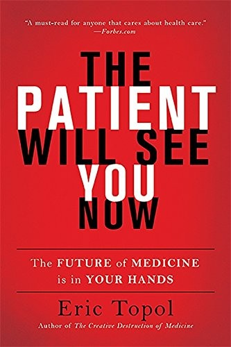
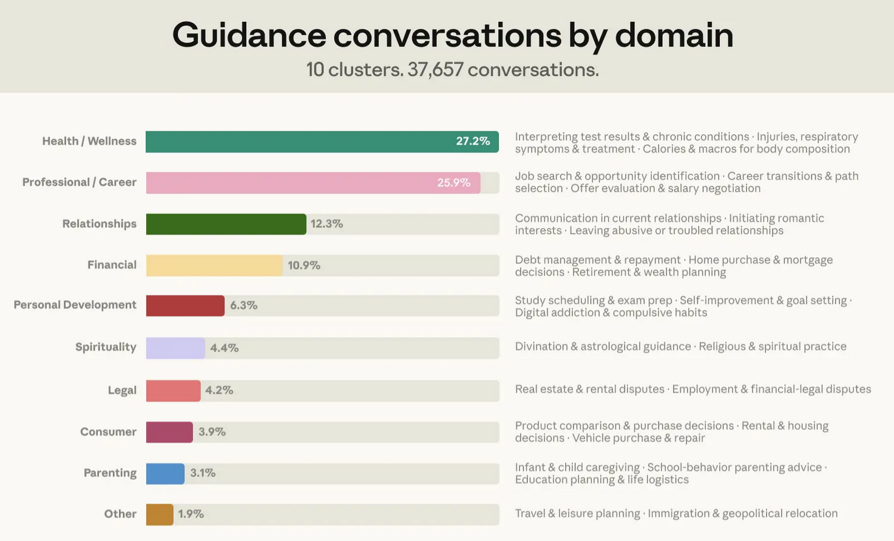

SASP Symposium 2026 — AI and the future of physiotherapy education
New therapeutic alliances
AI and physiotherapy: practice, research, education
Michael RoweUniversity of Lincoln
The premise
Ten years ago
Claim: smartphones and the internet would end medicine's paternalism, with patients tracking their own data, arriving informed, and in charge
That insight has largely come true — in some respects, to varying degrees
But the resource patients are turning to has changed; it doesn't just inform them anymore. It invites discussion

Slide 02 / 10
The evidence
Healthcare guidance conversations

Slide 03 / 10
The capability
AI is getting very good
ChatGPT was near the USMLE passing threshold in 2023; by GPT-4, accuracy across 45 worldwide licensing-exam studies had risen to 81% (Liu et al., 2024)
A meta-analysis of 15 studies found AI chatbots rated more empathic than human clinicians in 13 of them (Howcroft et al., 2025)
GPT-4o's moral guidance was rated more trustworthy and correct than a professional ethicist's (Wilbanks et al., 2024)
Physiotherapy is already asking the right question: not "should patients do this" but "why and how should clinicians engage" (Vancampfort & Van Damme, 2026)
Slide 04 / 10
The proof point
An independent AI physiotherapist
Flok Health's AI is Class IIa certified — the first AI system in Europe cleared to run an entire MSK care pathway unsupervised, from diagnosis through to discharge (Digital Health, 2025)
An NHS pilot at Cambridgeshire Community Services Trust more than halved the back pain waiting list in 12 weeks
Clearance has since widened to every MSK and pelvic health pathway, across 14 NHS regions, covering more than 6.6 million patients
Slide 05 / 10
The literacy
A new kind of health literacy
We say we want patients with health literacy and agency — informed, active, questioning
Social media already gave them a rough version of that — searchable, imperfect, and genuinely theirs
Now the resource reasons, adjusts, answers follow-up questions — and we still hesitate
Patients are forming real therapeutic alliances in those conversations, with alliance ratings comparable to human therapists in randomised trials (Heinz et al., 2025). We're not in the room for them
Slide 06 / 10
The preparation
Preparing students
Can our students help patients build more suitable prompts — the difference between a vague question and one that gets a grounded, useful answer?
Are they familiar with concepts like context engineering, which shapes whether a patient's AI gives them something accurate or something plausible-sounding?
What does a curriculum look like where AI is a valid, legitimate agent in the patient encounter — not an unacknowledged third party?
Slide 07 / 10
The gap
Research opportunities
We assume clinician involvement changes outcomes, but nobody has measured that for the patients already choosing AI instead
The training question — what physios need to know about this — should follow that evidence, not precede it
What we don't yet know: when the alliance with an AI helps, when it doesn't, and where we demonstrably still matter
Slide 08 / 10
The ask
What this asks of the profession
Shape this deliberately, on evidence, rather than reacting to it or gatekeeping it
Practice: engage the AI-informed patient relationship, don't compete with it
Education: prepare students for therapeutic alliances that include AI agents
Research: find out where we add value before designing training that assumes it
SASP Symposium 2026 — AI and the future of physiotherapy education